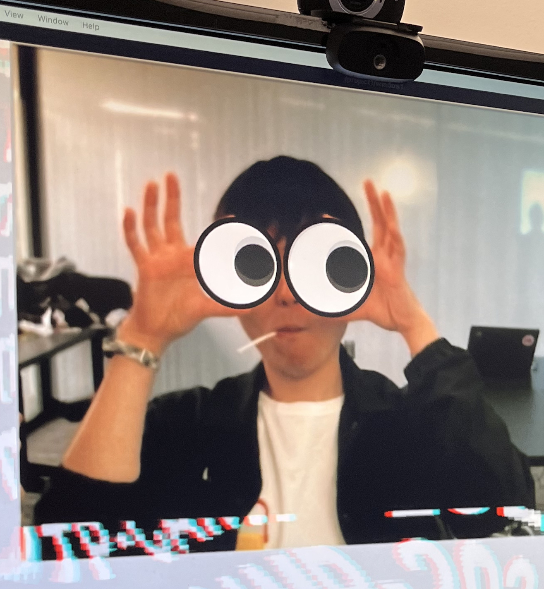

"EmerFlux: A Two-Layer Liquid Surface Display for Organic Pixel-Based Aesthetic Representation of Information". Kaito Shimizu and Toshitaka Amaoka. SIGGRAPH Emerging Technologies ’26. (International, Demo) | DOI
ABOUT

Shimizu Kaito
Kaito Shimizu
Kaito Shimizu is a doctoral student at Meisei University. His research and creative practice span human-computer interaction (HCI) and media art, with a focus on information expression using physical materials and phenomena. Centering on liquids and shape-changing interfaces, he explores new possibilities for displays and media devices that combine real-world material properties with computational control.
He treats the contingency and behavior of materials as part of expression itself, and investigates new forms of interaction and media expression that emerge through collaboration between computation and physical matter.
- p5.js
- Creative Coding
- Interaction Design
- Research Prototype
- Web Development
- Media Art
ACHIEVEMENTS
Presentations
"ColorFlow: An Approach to Colorized Pixel Representation in EmerFlux". Kaito Shimizu and Toshitaka Amaoka. NICOGRAPH International 2026. (International, Poster)
"Emerflux: Proposal for a water surface display using a two-layer liquid". Kaito Shimizu and Toshitaka Amaoka. IWAIT 2026. (International, Oral)
"Emerflux9: Proposal for a water surface display using a two-layer liquid". Kaito Shimizu and Toshitaka Amaoka. NICOGRAPH 2025. (Domestic, Demo)
"Steering: Visualization of social structures that intervene in others' decision-making". Sakiya Tanaka, Kaito Shimizu, Kota Kikuchi, Toshitaka Amaoka. NICOGRAPH 2025. (Domestic, Poster)
"HydroZen: Proposal for a heatstroke prevention system using shishi-odoshi-based drinking guidance". Kakeru Ohashi, Kaito Shimizu, Atsutoshi Tokuo, Shotaro Ishikawa. NICOGRAPH 2025. (Domestic, Poster)
"Twisted Band Display: Proposal of an information display method using twisted strings". Kaito Shimizu and Toshitaka Amaoka. Visual Expression and Art Science Forum 2024. (Domestic, Oral)
"Proposal of a visual expression method using sunlight". Haruka Kumada, Miwa Kanematsu, Kaito Shimizu, Kota Kikuchi, Toshitaka Amaoka. Visual Expression and Art Science Forum 2024. (Domestic, Poster)
"VOICE FLOWER: A workshop for creating a vase-shaped device for conveying feelings". Kaito Shimizu, Fuka Maruyama, Kota Kikuchi, Takuya Taketomi, Toshitaka Amaoka. NICOGRAPH 2023. (Domestic, Demo)
"Korekurai Device - Proposal For An Input Device Based On Body Scales And Gestures". Kaito Shimizu, Toshitaka Amaoka. NICOGRAPH International 2023. (International, Poster)
"Korekurai Modeler: Proposal of a modeling method using body scale and gestures". Kaito Shimizu and Toshitaka Amaoka. NICOGRAPH 2022. (Domestic, Poster)
"Ywine - Proposal to produce a cafe in the COVID-19 crisis". Kaito Shimizu, Toshitaka Amaoka. NICOGRAPH International 2022. (International, Poster)
Awards
Meisei University President's Special Award | EmerFlux (for the SIGGRAPH 2026 Best in Show award)
SIGGRAPH 2026 Emerging Technologies Best in Show | EmerFlux
NICOGRAPH International 2026 Best Poster Award | ColorFlow
NICOGRAPH 2025 Demo Exhibition Award | Emerflux9
NICOGRAPH 2023 Poster / Exhibition Award | VOICE FLOWER
Meisei University Faculty of Informatics Graduation Research Exhibition Support Center Award | Korekurai Device
Contributions
Contributed to the Japanese translation of the official p5.js and ml5.js websites.
Exhibitions
"EmerFlux", SIGGRAPH Emerging Technologies ’26 | Los Angeles
"AI / Love and Creation", Souhatsuten 2026 | Tokyo
"Goldberg Machine Connecting Spaces", Maker Faire Tokyo 2025, Tokyo Big Sight West Hall 4 | Tokyo
"LiftableForm", Souhatsuten 2025, Parthenon Tama Civic Hall | Tokyo
"MEISEI Clossing" / "Highly Explosive", Show All Things Show, ITP Camp 2024 | New York
"Connecting Past Space", Mono no Utsurikawari, FILTER gallery | Tokyo
"SnowFlake" / "Sounds Drop", Meisei University Open Campus, Meisei University | Tokyo